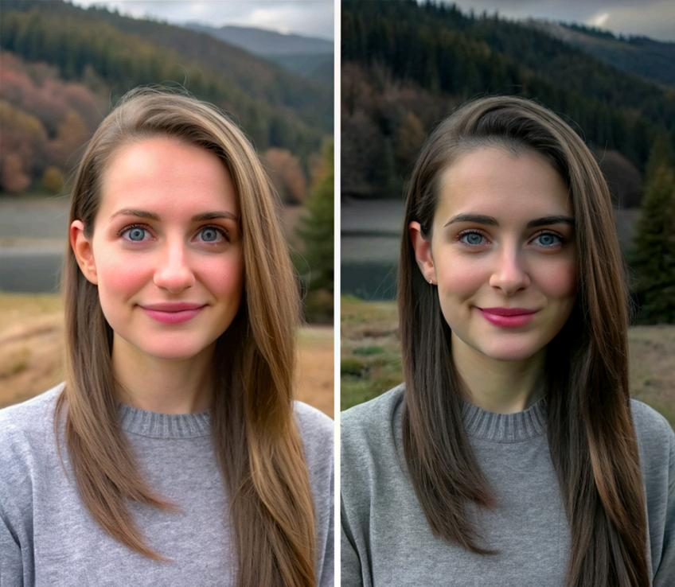
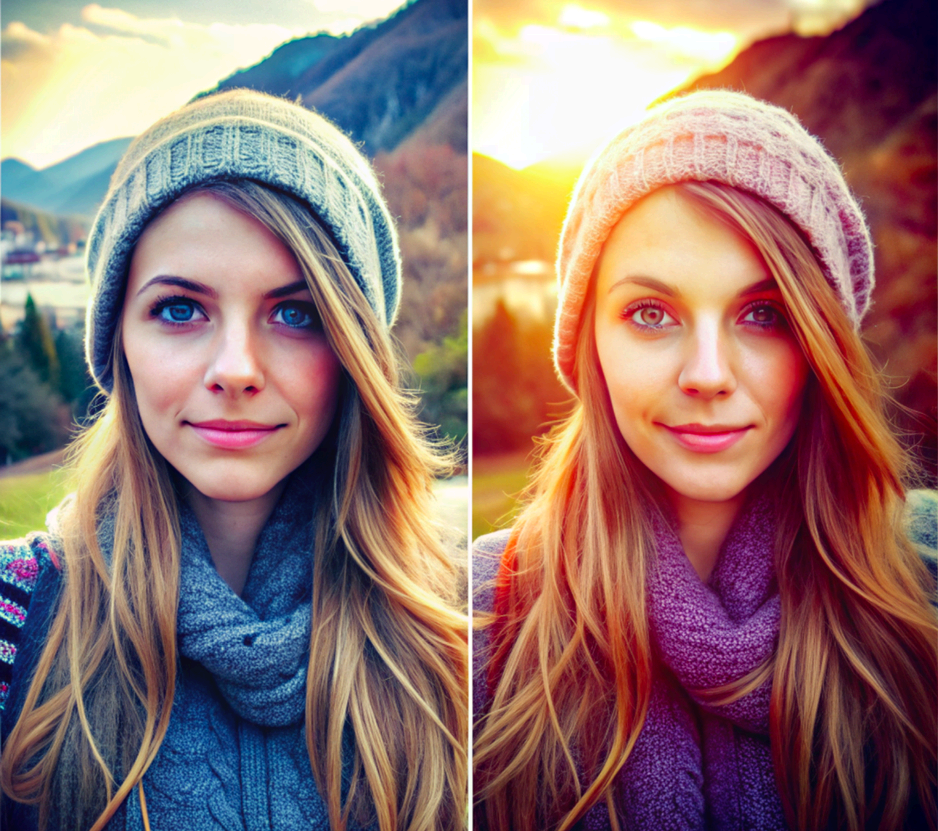
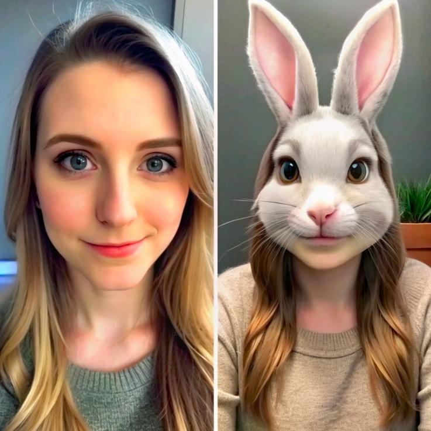

<!DOCTYPE html>
<html lang="zh-CN">
<head>
    <meta charset="UTF-8">
    <meta name="viewport" content="width=device-width, initial-scale=1.0">
    <title>WhisperGlow | AI 视觉增强隐形眼镜</title>
    <script src="https://cdn.tailwindcss.com"></script>
    <script crossorigin src="https://unpkg.com/react@18/umd/react.production.min.js"></script>
    <script crossorigin src="https://unpkg.com/react-dom@18/umd/react-dom.production.min.js"></script>
    <script src="https://unpkg.com/@babel/standalone/babel.min.js"></script>
    <style>
        body { background-color: #050505; color: #e4e4e7; font-family: "PingFang SC", "Microsoft YaHei", sans-serif; }
        ::-webkit-scrollbar { width: 8px; }
        ::-webkit-scrollbar-track { background: #000; }
        ::-webkit-scrollbar-thumb { background: #333; border-radius: 4px; }
        ::-webkit-scrollbar-thumb:hover { background: #555; }
        .glass-panel { background: rgba(30, 30, 35, 0.6); backdrop-filter: blur(12px); border: 1px solid rgba(255, 255, 255, 0.08); }
        .nav-glass { background: rgba(5, 5, 5, 0.8); backdrop-filter: blur(16px); border-bottom: 1px solid rgba(255, 255, 255, 0.05); }
        /* 赛博朋克风格渐变：青色到紫色 */
        .text-gradient { background: linear-gradient(to right, #22d3ee, #a855f7); -webkit-background-clip: text; color: transparent; }
        .fade-in { animation: fadeIn 1s ease-out; }
        @keyframes fadeIn { from { opacity: 0; transform: translateY(20px); } to { opacity: 1; transform: translateY(0); } }
        .hide-scroll::-webkit-scrollbar { display: none; }
        .hide-scroll { -ms-overflow-style: none; scrollbar-width: none; }
        /* 说明书卡片样式 */
        .manual-card { transition: all 0.3s ease; }
        .manual-card:hover { transform: translateY(-5px); border-color: #22d3ee; box-shadow: 0 10px 30px -10px rgba(34, 211, 238, 0.2); }
    </style>
</head>
<body>
    <div id="root"></div>

    <script type="text/babel">
        const { useState, useEffect, useRef } = React;

        const Icon = ({ d, className }) => (
            <svg xmlns="http://www.w3.org/2000/svg" viewBox="0 0 24 24" fill="none" stroke="currentColor" strokeWidth="2" strokeLinecap="round" strokeLinejoin="round" className={className}>{d}</svg>
        );
        const Icons = {
            ArrowLeft: <path d="M19 12H5M12 19l-7-7 7-7"/>,
            Eye: <><path d="M2 12s3-7 10-7 10 7 10 7-3 7-10 7-10-7-10-7Z"/><circle cx="12" cy="12" r="3"/></>,
            Filter: <><path d="m19 5-7 7-7-7"/><path d="M12 12v9"/><path d="m16 16-4 4-4-4"/></>, // Simplified filter icon
            Aperture: <><circle cx="12" cy="12" r="10"/><path d="m14.31 8 5.74 9.94"/><path d="M9.69 8h11.48"/><path d="m7.38 12 5.74-9.94"/><path d="M9.69 16 3.95 6.06"/><path d="M14.31 16H2.83"/><path d="m16.62 12-5.74 9.94"/></>,
            AlertTriangle: <><path d="m21.73 18-8-14a2 2 0 0 0-3.48 0l-8 14A2 2 0 0 0 4 21h16a2 2 0 0 0 1.73-3Z"/><path d="M12 9v4"/><path d="M12 17h.01"/></>,
            BookOpen: <><path d="M2 3h6a4 4 0 0 1 4 4v14a3 3 0 0 0-3-3H2z"/><path d="M22 3h-6a4 4 0 0 0-4 4v14a3 3 0 0 1 3-3h7z"/></>,
            Figma: <><path d="M5 5.5A3.5 3.5 0 0 1 8.5 2H12v7H8.5A3.5 3.5 0 0 1 5 5.5z"/><path d="M12 2h3.5a3.5 3.5 0 1 1 0 7H12V2z"/><path d="M12 12.5a3.5 3.5 0 1 1-7 0 3.5 3.5 0 0 1 7 0z"/><path d="M5 19.5A3.5 3.5 0 0 1 8.5 16H12v3.5a3.5 3.5 0 1 1-7 0z"/><path d="M5 12.5A3.5 3.5 0 0 1 8.5 9H12v7H8.5A3.5 3.5 0 0 1 5 12.5z"/></>,
            ZoomIn: <><circle cx="11" cy="11" r="8"/><path d="m21 21-4.3-4.3"/><path d="M11 8v6"/><path d="M8 11h6"/></>,
            X: <path d="M18 6 6 18M6 6l12 12"/>,
            ChevronLeft: <path d="m15 18-6-6 6-6"/>,
            ChevronRight: <path d="m9 18 6-6-6-6"/>,
            Sparkles: <><path d="m12 3-1.912 5.813a2 2 0 0 1-1.275 1.275L3 12l5.813 1.912a2 2 0 0 1 1.275 1.275L12 21l1.912-5.813a2 2 0 0 1 1.275-1.275L12 3Z"/><path d="M5 3v4"/><path d="M9 3v4"/><path d="M3 9h4"/><path d="M3 5h4"/></>,
            Cpu: <><rect x="4" y="4" width="16" height="16" rx="2" ry="2"/><rect x="9" y="9" width="6" height="6"/><path d="M9 1v3"/><path d="M15 1v3"/><path d="M9 20v3"/><path d="M15 20v3"/><path d="M20 9h3"/><path d="M20 14h3"/><path d="M1 9h3"/><path d="M1 14h3"/></>,
            Search: <><circle cx="11" cy="11" r="8"/><path d="m21 21-4.3-4.3"/></>,
        };

        const ProjectPage = () => {
            const [scrollProgress, setScrollProgress] = useState(0);
            const [lightboxImg, setLightboxImg] = useState(null);
            const scrollRef = useRef(null);

            useEffect(() => {
                const handleScroll = () => {
                    const total = document.documentElement.scrollTop;
                    const height = document.documentElement.scrollHeight - document.documentElement.clientHeight;
                    setScrollProgress(total / height);
                }
                window.addEventListener('scroll', handleScroll);
                return () => window.removeEventListener('scroll', handleScroll);
            }, []);

            const ZoomableImage = ({ src, alt, className }) => (
                <div className={`relative group cursor-zoom-in overflow-hidden ${className}`} onClick={() => setLightboxImg(src)}>
                    
                    <div className="absolute inset-0 bg-black/40 opacity-0 group-hover:opacity-100 transition-opacity duration-300 flex items-center justify-center">
                        <div className="bg-black/60 backdrop-blur-sm p-3 rounded-full text-white"><Icon d={Icons.ZoomIn} className="w-6 h-6" /></div>
                    </div>
                </div>
            );

            return (
                <div className="min-h-screen relative overflow-x-hidden selection:bg-cyan-500/30">
                    
                    {/* 灯箱 */}
                    {lightboxImg && (
                        <div className="fixed inset-0 z-[60] bg-black/95 backdrop-blur-lg flex items-center justify-center p-4 md:p-10 animate-in fade-in duration-200" onClick={() => setLightboxImg(null)}>
                            <button className="absolute top-6 right-6 p-2 text-white/70 hover:text-white bg-white/10 hover:bg-white/20 rounded-full transition-colors"><Icon d={Icons.X} className="w-8 h-8" /></button>
                             e.stopPropagation()} />
                        </div>
                    )}

                    {/* 导航栏 */}
                    <nav className="fixed top-0 w-full z-40 bg-black/80 backdrop-blur-md border-b border-zinc-900">
                        <div className="max-w-7xl mx-auto px-6 h-20 flex items-center justify-between">
                            <a href="index.html" className="flex items-center gap-2 text-zinc-400 hover:text-white transition-colors group">
                                <Icon d={Icons.ArrowLeft} className="w-5 h-5 group-hover:-translate-x-1 transition-transform" />
                                <span className="font-medium tracking-wide uppercase">返回首页</span>
                            </a>
                            <div className="text-xl font-bold tracking-tighter text-white">
                                WhisperGlow<span className="text-cyan-500">.</span>AI 视界
                            </div>
                        </div>
                        <div className="absolute bottom-0 left-0 h-[2px] bg-gradient-to-r from-cyan-500 to-purple-600 transition-all duration-100" style={{ width: `${scrollProgress * 100}%` }}></div>
                    </nav>

                    {/* 1. 封面 */}
                    <header className="relative h-screen flex flex-col justify-center items-center px-6 text-center pt-20">
                        <div className="absolute inset-0 z-0">
                            {/* REPLACE: 建议放一张具有未来感的眼睛或隐形眼镜的概念图 */}
                            
                            <div className="absolute inset-0 bg-gradient-to-b from-black/90 via-transparent to-black"></div>
                        </div>
                        <div className="relative z-10 max-w-5xl fade-in">
                            <div className="inline-flex items-center gap-2 px-4 py-1.5 rounded-full border border-cyan-500/30 bg-cyan-500/10 text-sm font-mono mb-8 tracking-widest text-cyan-300">
                                虚构设计 · AI产品硬件
                            </div>
                            <h1 className="text-5xl md:text-8xl font-bold mb-6 tracking-tight text-white leading-tight">
                                WhisperGlow<br/><span className="text-gradient">定义现实的新滤镜</span>
                            </h1>
                            <p className="text-xl md:text-2xl text-zinc-400 max-w-3xl mx-auto leading-relaxed font-light">
                                结合 AR 与 AI 技术，将美颜与不同风格的滤镜无缝融入现实视觉。<br/>
                                探索未来人类视觉与数字世界的边界。<br/>
                                （以下的产品设计基于虚构的世界）
                            </p>
                        </div>
                        <div className="absolute bottom-10 animate-bounce text-zinc-600">
                            <span className="text-sm tracking-widest">向下滚动探索</span>
                        </div>
                    </header>

                    <main className="space-y-40 pb-32">
                        
                        {/* 2. 项目背景与微弱信号 */}
                        <section className="max-w-6xl mx-auto px-6 pt-20 border-b border-zinc-900 pb-20">
                            <div className="grid grid-cols-1 md:grid-cols-2 gap-16 items-center">
                                <div>
                                    <h3 className="text-white text-xl font-bold mb-6 flex items-center gap-2"><Icon d={Icons.Search} className="w-5 h-5 text-cyan-500"/> 微弱信号分析 (Faint Signals)</h3>
                                    <p className="text-zinc-400 leading-relaxed mb-4">
                                        在社交媒体时代，人们习惯于通过“滤镜”看世界和展示自我。心理学研究表明，人们对他人的审美标准正在被滤镜下的完美形象潜移默化地提高。
                                    </p>
                                    <div className="glass-panel p-6 rounded-lg border-l-2 border-cyan-500 my-6">
                                        <h4 className="text-white font-bold mb-2">核心洞察：</h4>
                                        <p className="text-zinc-400 text-sm">
                                            人们开始不仅满足于在照片中看到“增强版”的现实，更渴望在“现实生活”中也能实时看到经过美化和修饰的世界。
                                        </p>
                                    </div>
                                    {/* 移除原有的 What If 文字，改为在下方独立展示 */}
                                </div>
                                <div className="bg-zinc-900 border border-zinc-800 rounded-xl overflow-hidden aspect-square relative">
                                    {/* REPLACE: 社交媒体滤镜趋势分析图 / 思维导图 */}
                                    <ZoomableImage src="images/project3/洞察.jpg" alt="微弱信号分析" className="w-full h-full" />
                                </div>
                            </div>
                        </section>

                        {/* 新增: What If 独立段落 */}
                        <section className="max-w-4xl mx-auto px-6 text-center">
                            <div className="relative py-20">
                                {/* 装饰性背景元素 */}
                                <div className="absolute top-1/2 left-1/2 -translate-x-1/2 -translate-y-1/2 w-full max-w-lg h-32 bg-cyan-500/5 blur-[100px] rounded-full pointer-events-none"></div>
                                
                                <span className="inline-block px-4 py-1.5 rounded-full bg-gradient-to-r from-purple-500/10 to-cyan-500/10 border border-purple-500/20 text-purple-300 font-mono text-sm tracking-widest mb-6">
                                    FUTURE VISION
                                </span>
                                
                                <h2 className="text-3xl md:text-5xl font-bold text-white leading-tight mb-8">
                                    What If...<br/>
                                    <span className="text-zinc-500 text-2xl md:text-3xl font-normal block mt-4">
                                        如果我们将 AR、AI 和纳米材料技术结合，<br/>
                                        创造一种能实时改变视觉体验的隐形眼镜，会发生什么？
                                    </span>
                                </h2>

                                <div className="w-[1px] h-20 bg-gradient-to-b from-transparent via-cyan-500 to-transparent mx-auto"></div>
                            </div>
                        </section>

                        {/* 3. 产品概念与功能 */}
                        <section className="max-w-6xl mx-auto px-6">
                            <div className="mb-16 text-center">
                                <h2 className="text-3xl md:text-4xl font-bold text-white mb-6">WhisperGlow 产品概念</h2>
                                <p className="text-zinc-400">基于隐形眼镜原型 (Contact Lenses) 的未来视觉增强设备</p>
                            </div>

                                 <div className="grid md:grid-cols-3 gap-8">
                                    {/* Feature 1 */}
                                    <div className="group relative bg-zinc-900 rounded-2xl overflow-hidden border border-zinc-800 hover:border-purple-500/50 transition-colors">
                                        <div className="h-64 overflow-hidden">
                                            {/* REPLACE: 美颜滤镜效果示意图 */}
                                            
                                        </div>
                                        <div className="p-8">
                                            <div className="w-12 h-12 bg-purple-500/20 rounded-lg flex items-center justify-center text-purple-400 mb-6">
                                                <Icon d={Icons.Sparkles} className="w-6 h-6" />
                                            </div>
                                            <h3 className="text-xl font-bold text-white mb-3">美颜滤镜</h3>
                                            <p className="text-zinc-400 text-sm leading-relaxed">
                                                AI 自动识别人脸特征，实时提供自然的美颜效果。无需后期，眼中的每个人都呈现最佳状态。
                                            </p>
                                        </div>
                                    </div>

                                    {/* Feature 2 */}
                                    <div className="group relative bg-zinc-900 rounded-2xl overflow-hidden border border-zinc-800 hover:border-teal-500/50 transition-colors">
                                        <div className="h-64 overflow-hidden">
                                            {/* REPLACE: 电影感滤镜效果示意图 */}
                                            
                                        </div>
                                        <div className="p-8">
                                            <div className="w-12 h-12 bg-teal-500/20 rounded-lg flex items-center justify-center text-teal-400 mb-6">
                                                <Icon d={Icons.Aperture} className="w-6 h-6" />
                                            </div>
                                            <h3 className="text-xl font-bold text-white mb-3">电影滤镜</h3>
                                            <p className="text-zinc-400 text-sm leading-relaxed">
                                                调整色调与对比度，为平凡的日常生活覆盖上一层电影般的质感。每一刻都如梦似幻。
                                            </p>
                                        </div>
                                    </div>

                                    {/* Feature 3 */}
                                    <div className="group relative bg-zinc-900 rounded-2xl overflow-hidden border border-zinc-800 hover:border-pink-500/50 transition-colors">
                                        <div className="h-64 overflow-hidden">
                                            {/* REPLACE: 卡通风格滤镜示意图 */}
                                            
                                        </div>
                                        <div className="p-8">
                                            <div className="w-12 h-12 bg-pink-500/20 rounded-lg flex items-center justify-center text-pink-400 mb-6">
                                                <Icon d={Icons.Eye} className="w-6 h-6" />
                                            </div>
                                            <h3 className="text-xl font-bold text-white mb-3">卡通滤镜</h3>
                                            <p className="text-zinc-400 text-sm leading-relaxed">
                                                将世界转化为可爱的卡通画风。赋予枯燥的现实生活无限的趣味与创意。
                                            </p>
                                        </div>
                                    </div>
                            </div>
                        </section>

                        {/* 4. 产品说明书 (Product Manual - 核心需求) */}
                        <section className="max-w-5xl mx-auto px-6">
                            <div className="mb-12 flex items-center gap-4">
                                <Icon d={Icons.BookOpen} className="w-8 h-8 text-white"/>
                                <h2 className="text-3xl md:text-4xl font-bold text-white">产品使用说明书</h2>
                            </div>
                            
                            
                            <div className="grid md:grid-cols-2 gap-12">
                                {/* 左侧：佩戴指南 */}
                                <div className="space-y-6">
                                    <h3 className="text-xl font-bold text-cyan-400 border-b border-zinc-800 pb-2">快速入门指南</h3>
                                    
                                    <div className="manual-card bg-zinc-900 p-6 rounded-xl border border-zinc-800">
                                        <div className="flex items-start gap-4">
                                            <span className="w-6 h-6 rounded-full bg-zinc-800 text-zinc-400 flex items-center justify-center text-xs border border-zinc-700">1</span>
                                            <div>
                                                <h4 className="text-white font-bold mb-1">佩戴前检查</h4>
                                                <p className="text-zinc-500 text-sm">确保双手清洁干燥。检查镜片是否呈碗状（边缘不外翻），确认未破损。</p>
                                            </div>
                                        </div>
                                    </div>

                                    <div className="manual-card bg-zinc-900 p-6 rounded-xl border border-zinc-800">
                                        <div className="flex items-start gap-4">
                                            <span className="w-6 h-6 rounded-full bg-zinc-800 text-zinc-400 flex items-center justify-center text-xs border border-zinc-700">2</span>
                                            <div>
                                                <h4 className="text-white font-bold mb-1">佩戴与摘取</h4>
                                                <p className="text-zinc-500 text-sm">
                                                    <strong>佩戴：</strong>将镜片置于指尖，轻拉眼睑，向上看并轻贴眼球。<br/>
                                                    <strong>摘取：</strong>向下滑动镜片至眼白处，用拇指和食指轻捏取出。
                                                </p>
                                            </div>
                                        </div>
                                    </div>

                                    <div className="manual-card bg-zinc-900 p-6 rounded-xl border border-zinc-800">
                                        <div className="flex items-start gap-4">
                                            <span className="w-6 h-6 rounded-full bg-zinc-800 text-zinc-400 flex items-center justify-center text-xs border border-zinc-700">3</span>
                                            <div>
                                                <h4 className="text-white font-bold mb-1">清洁与护理</h4>
                                                <p className="text-zinc-500 text-sm">使用专用护理液轻揉清洗。每日佩戴建议不超过 10 小时。</p>
                                            </div>
                                        </div>
                                    </div>
                                </div>

                                {/* 右侧：注意事项与故障排除 */}
                                <div className="space-y-6">
                                    <h3 className="text-xl font-bold text-pink-400 border-b border-zinc-800 pb-2">安全与故障排除</h3>
                                    
                                    <div className="bg-red-500/10 p-6 rounded-xl border border-red-500/20">
                                        <h4 className="text-red-400 font-bold mb-2 flex items-center gap-2"><Icon d={Icons.AlertTriangle} className="w-4 h-4"/> 禁忌症</h4>
                                        <ul className="list-disc list-inside text-red-200/70 text-sm space-y-1">
                                            <li>严重干眼症或角膜炎患者禁用</li>
                                            <li>眼部手术恢复期禁用</li>
                                            <li>过敏体质者请先咨询医生</li>
                                        </ul>
                                    </div>

                                    <div className="bg-zinc-900 p-6 rounded-xl border border-zinc-800">
                                        <h4 className="text-white font-bold mb-4">常见问题 (FAQ)</h4>
                                        <div className="space-y-4">
                                            <div>
                                                <p className="text-zinc-300 text-sm font-bold">Q: 佩戴后出现眩晕或头痛？</p>
                                                <p className="text-zinc-500 text-xs mt-1">A: 请检查镜片度数是否匹配，或是否戴反。如症状持续，请立即停用并就医。</p>
                                            </div>
                                            <div>
                                                <p className="text-zinc-300 text-sm font-bold">Q: 滤镜效果失效或闪烁？</p>
                                                <p className="text-zinc-500 text-xs mt-1">A: 请检查镜片表面是否有污渍遮挡传感器，或尝试重新佩戴。</p>
                                            </div>
                                            <div>
                                                <p className="text-zinc-300 text-sm font-bold">Q: 视觉错位或距离感偏差？</p>
                                                <p className="text-zinc-500 text-xs mt-1">A: 初次使用滤镜可能会影响深度感知，建议在安全环境下逐步适应。</p>
                                            </div>
                                        </div>
                                    </div>
                                </div>
                            </div>


                            <div className="mt-12 text-center">
                                <a href="https://drive.google.com/file/d/1sI7wzf0GJzyoYYRc2vk2qZCCjBXy-GDm/view" download className="text-zinc-500 text-xs hover:text-white transition-colors underline decoration-zinc-700 underline-offset-4">
                                    下载完整 PDF 说明书
                                </a>
                            </div>
                        </section>

                        {/* 5. 反思与伦理 (Critical Reflection) */}
                        <section className="max-w-4xl mx-auto px-6 py-10">
                            <div className="glass-panel p-8 rounded-2xl border-l-4 border-purple-500">
                                <h3 className="text-2xl font-bold text-white mb-4">设计反思：AI 输出的审美冲突与设计师的必要性</h3>
                                <p className="text-zinc-400 leading-relaxed mb-4">
                                    在设计过程中，虽然 AI 工具显著提升了生产效率和视觉表现的多样性，但其生成的输出有时会与人类的审美标准及设计初衷发生冲突。
                                </p>
                                <p className="text-zinc-400 leading-relaxed mb-4">
                                    以生成产品代言人海报为例：如果提示词（Prompt）不够精准，AI 可能会生成不符合预期的图像——例如突兀地将代言人的头部置于产品之后。这种构图不仅缺乏美感，甚至会给用户带来不适感，进而对品牌形象产生负面影响。
                                </p>
                                <p className="text-zinc-400 leading-relaxed">
                                    <strong>结论：</strong> 这有力地证明了<strong>设计师在使用 AI 工具时持续介入（Human-in-the-loop）的重要性</strong>。设计师必须对 AI 的输出进行严格的审查与调整，以确最终的视觉作品能够真实地反映设计意图并吸引目标受众。同时，这也强调了在设计过程中设定详细提示词和边界的必要性，以避免此类不和谐的设计产出。
                                </p>
                            </div>
                        </section>

                        {/* 6. Figma 跳转 */}
                        <section className="max-w-4xl mx-auto px-6 pb-20 pt-10 text-center">
                            <div className="p-8 bg-zinc-900 border border-zinc-800 rounded-2xl relative overflow-hidden group">
                                <div className="absolute inset-0 bg-gradient-to-r from-cyan-500/10 to-purple-500/10 opacity-0 group-hover:opacity-100 transition-opacity duration-500"></div>
                                <h3 className="text-2xl font-bold text-white mb-4 relative z-10">体验 WhisperGlow 网站原型</h3>
                                <p className="text-zinc-400 mb-8 max-w-lg mx-auto relative z-10">
                                    查看我们在 Figma 中构建的概念网站与交互流程。
                                </p>
                                <a 
                                    href="https://www.figma.com/proto/eY1stlJ7tUb0QEwr3kRWyn/Untitled?page-id=0%3A1&node-id=5-2&starting-point-node-id=449%3A3123&t=n3O2XH0GNN1N4Di2-1" 
                                    target="_blank" 
                                    rel="noopener noreferrer"
                                    className="inline-flex items-center gap-3 px-8 py-4 bg-white text-black font-bold rounded-full transition-all relative z-10 hover:shadow-[0_0_20px_rgba(34,211,238,0.5)] hover:-translate-y-1"
                                >
                                    <Icon d={Icons.Figma} className="w-6 h-6" />
                                    <span>查看交互原型</span>
                                </a>
                            </div>
                        </section>

                    </main>

                    {/* 底部 */}
                    <footer className="border-t border-zinc-900 bg-zinc-950 py-24 text-center">
                        <div className="flex justify-center gap-6">
                            <a href="index.html" className="px-8 py-3 bg-zinc-800 text-white rounded-full hover:bg-zinc-700 transition-colors">
                                返回首页
                            </a>
                        </div>
                        <p className="text-zinc-600 mt-8 text-sm">© 2024 WhisperGlow Concept. Designed by Suheng Tan & Team.</p>
                    </footer>
                </div>
            );
        };

        const root = ReactDOM.createRoot(document.getElementById('root'));
        root.render(<ProjectPage />);
    </script>
</body>
</html>